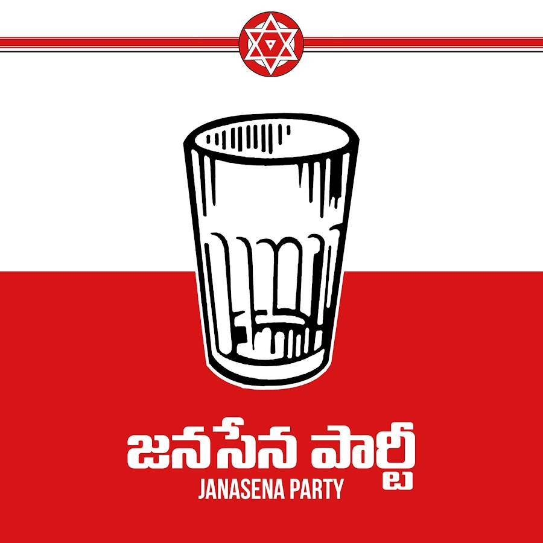
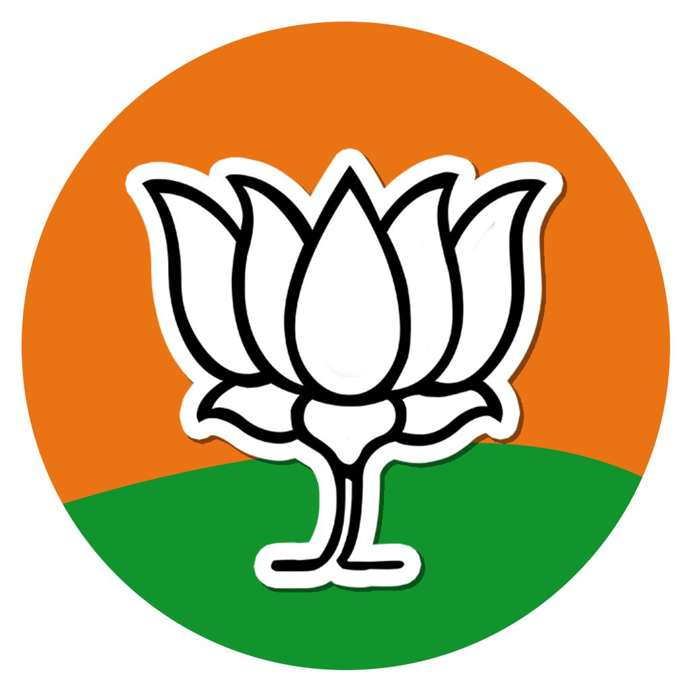

Andhra Pradesh - Political Parties
Telugu Desam Party
Telugu Desam Party is a National party, which has a strong presence both at state level and central politcis. TDP was formed in 29 March 1982 by Late Shri Nandamuri Taraka Rama Rao. TDP espoused no specific ideology except for its commitment of safeguarding “the political, economic, social, and cultural foundations of Telugu-speaking people”. TDP was the first regional party in independent India to have formed the main opposition in the 8th Lok Sabha (1984). Since 1995 the party has been headed by N. Chandrababu Naidu, former Chief Minister of Andhra Pradesh.
Proceed To Take Membership
YSR Congress Party
YSR Congress Party or Yuvajana, Shramika, Rythu Congress Party (lit. Youth, Labour and Farmer Congress Party) is a regional political party in the states of Andhra Pradesh and Telangana in India. It was founded by Siva Kumar, a fan of YSR, in 2009 and taken over by Y. S. Jagan, the son of former Andhra Pradesh chief minister Y. S. Rajasekhara Reddy (popularly known as YSR) in 2011. Both YSR and YS Jagan had been members of the Indian National Congress. YS Jagan was also elected as the national president of the party.
Proceed To Take Membership
 Janasena Party
Jana Sena or Jana Sena Party (JSP) (People's Army Party) is an Indian Regional political party based in Andhra Pradesh and Telangana, India. It was founded by Tollywood actor and politician Pawan Kalyan on 14 March 2014. Jana Sena means "People's Army" in Telugu. The motto of the party is "fight for the rights of each and every common person". The main goal of Jana Sena is to question any type of corruption in government functioning and organizations and to protect basic rights of people.
Proceed To Take Membership
 Bharatiya Janatha Party
The Bharatiya Janata Party is a political party in India, and one of the two major Indian political parties alongside the Indian National Congress.Since 2014, it has been the ruling political party in India under Narendra Modi, the incumbent Indian prime minister.[41] The BJP is aligned with right-wing politics, and its policies have historically reflected a traditional Hindu nationalist ideology.It has close ideological and organisational links to the Rashtriya Swayamsevak Sangh (RSS).
Proceed To Take Membership